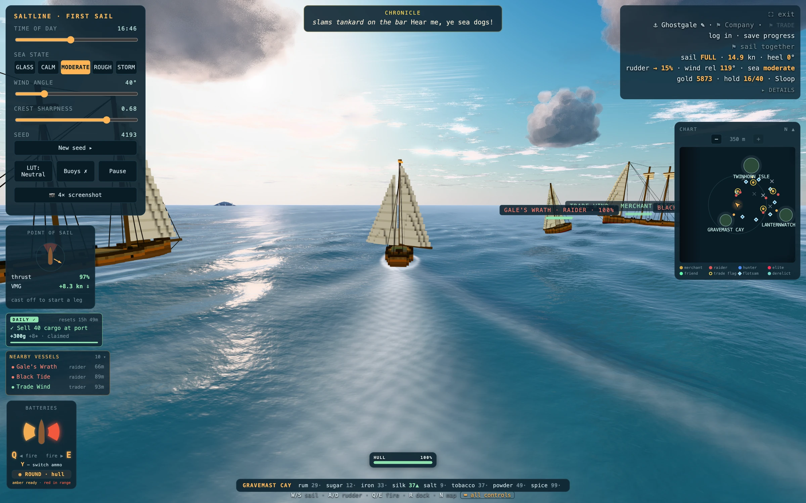
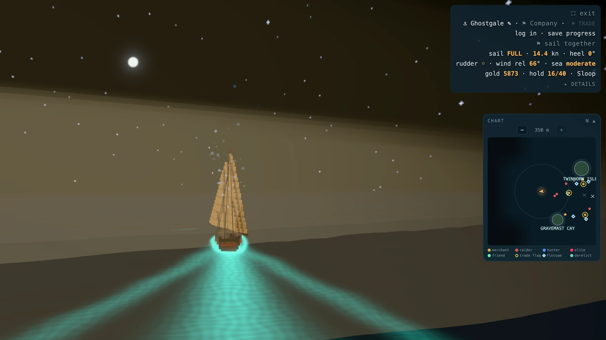
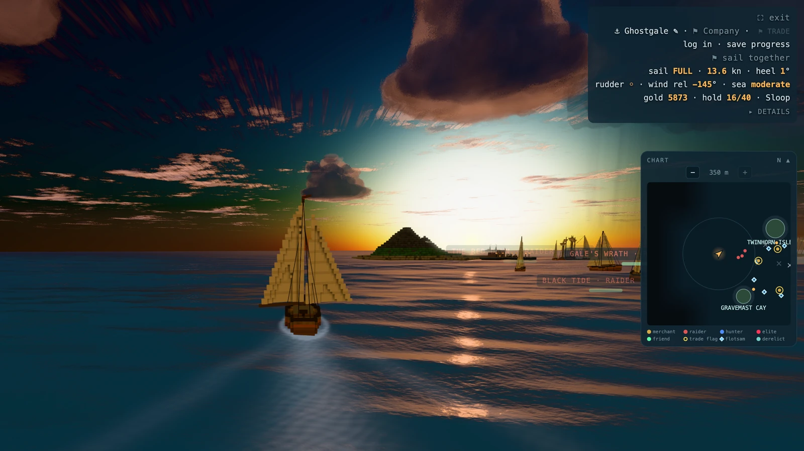
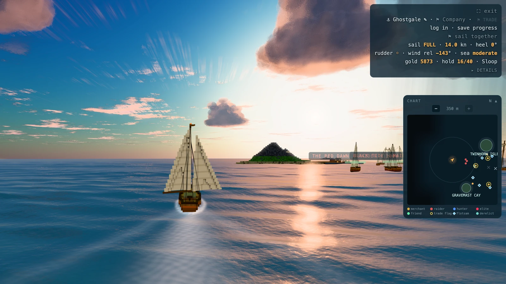
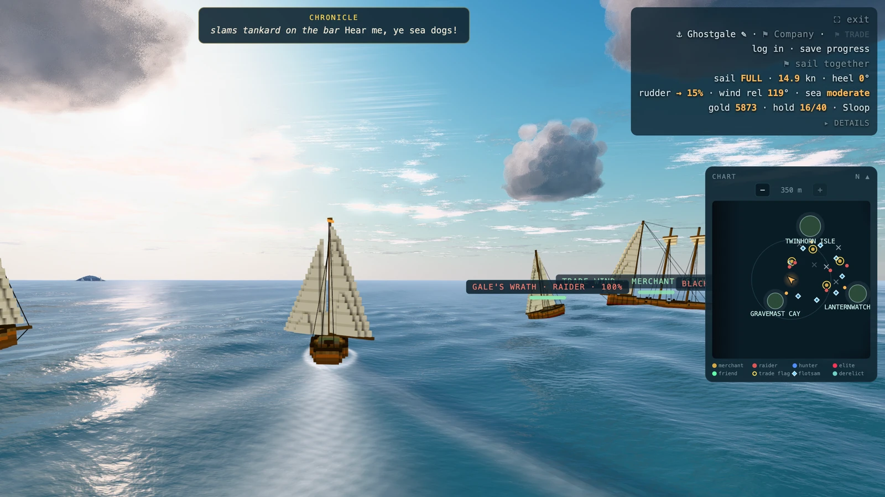
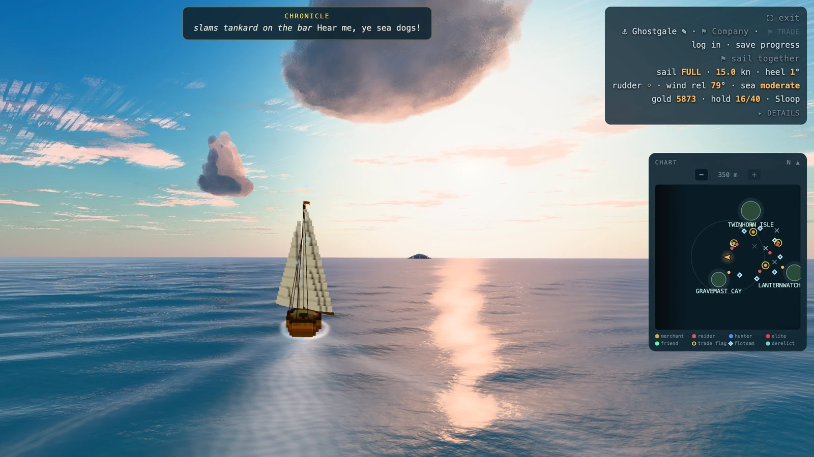
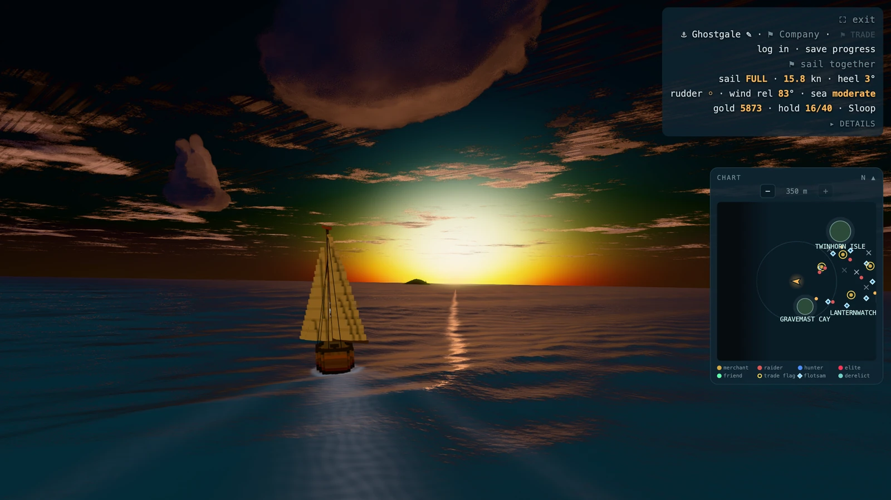

Constraint
Thrust depends on point of sail: the boat must feel like a boat, while a shared sea keeps each player’s state consistent.
CASE / Simulation / multiplayer
Age of sail in a browser, with a real sailing model under it.

HOW IT HOLDS UP
The sailing model, renderer, multiplayer and account persistence.
Thrust depends on point of sail: the boat must feel like a boat, while a shared sea keeps each player’s state consistent.
Use point-of-sail thrust and heading to derive VMG, then expose relative wind, heel, thrust and VMG in the HUD so the rule can be learned rather than guessed.
Live at saltline.app with accounts and up to 20 players per sea; six recorded frames hold seed 4193 and wind settings constant.
SELECTED PROOF
RECORDED STATES







KEEP READING